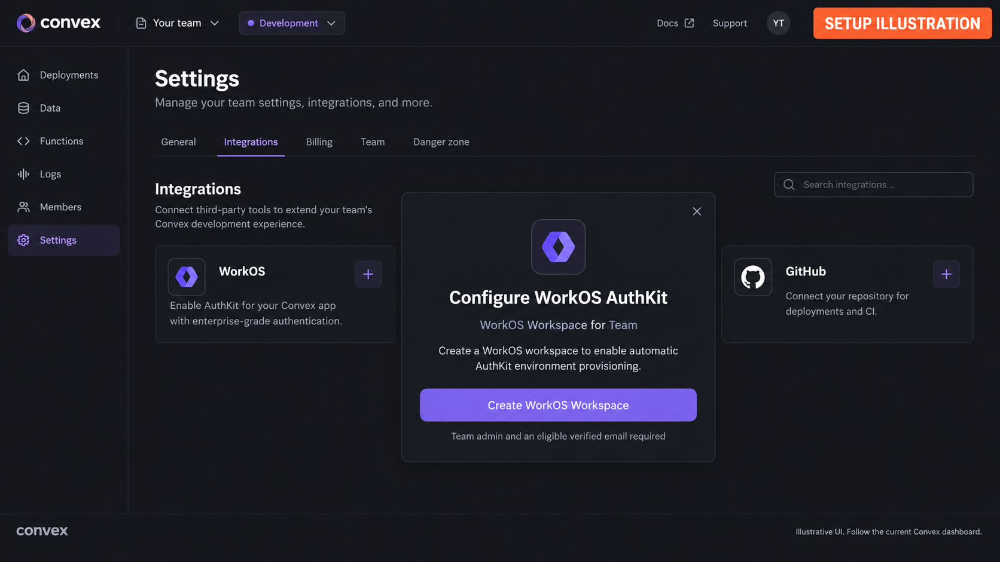
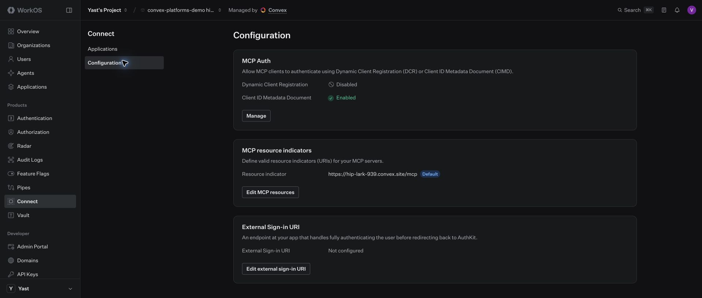
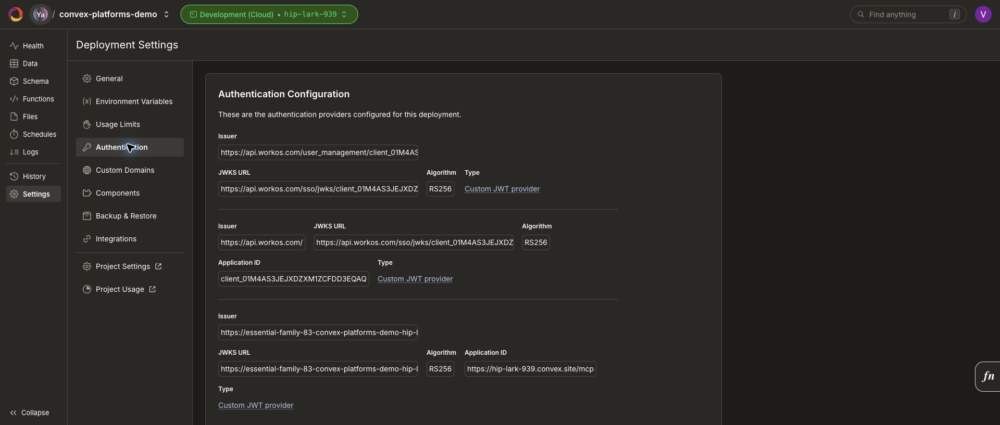
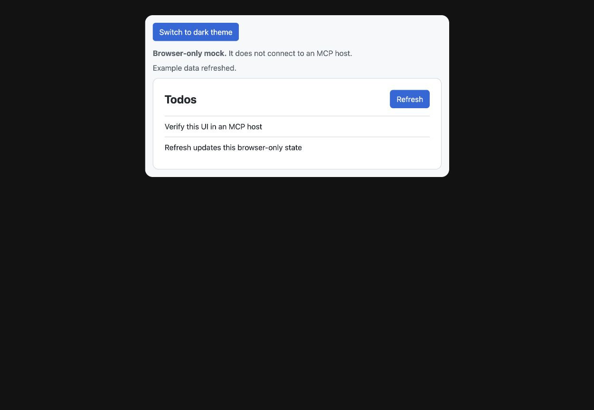

Set up the real integrations. Generate the rest.
Begin in a development deployment.

Conceptual path: Convex development deployment → Settings → Integrations → WorkOS → Create WorkOS Workspace. The surrounding interface is illustrative; use it to orient, then confirm the live dashboard yourself.
Register WorkOS Connect for the exact MCP resource.

Captured WorkOS Connect configuration. Enable Client ID Metadata Document support and register the exact public /mcp resource for the deployment; preview and production are separate resources.
Keep the Convex JWT provider aligned.

Captured Convex AuthKit provider configuration. Match the trusted WorkOS issuer, JWKS endpoint, and the MCP resource audience in the deployment that serves the route.
Install, describe internal functions, then generate.
$ bun add @disposabl/convex-platforms
$ bunx convex-platforms init --name my-app
// convex/todos/internal.ts
export const listTodos = internalQuery({
platforms: { api: true, mcp: true, cli: true, 'sdk-typescript': true },
args: { ...identityFields }, handler: async () => []
})
$ bun run platforms:generate && bun run platforms:checkKeep host UI separate from the authenticated tool.

Local browser mock of a presentational MCP App component. A real ChatGPT, Codex, or Claude installation still needs its own OAuth and live-tool verification.